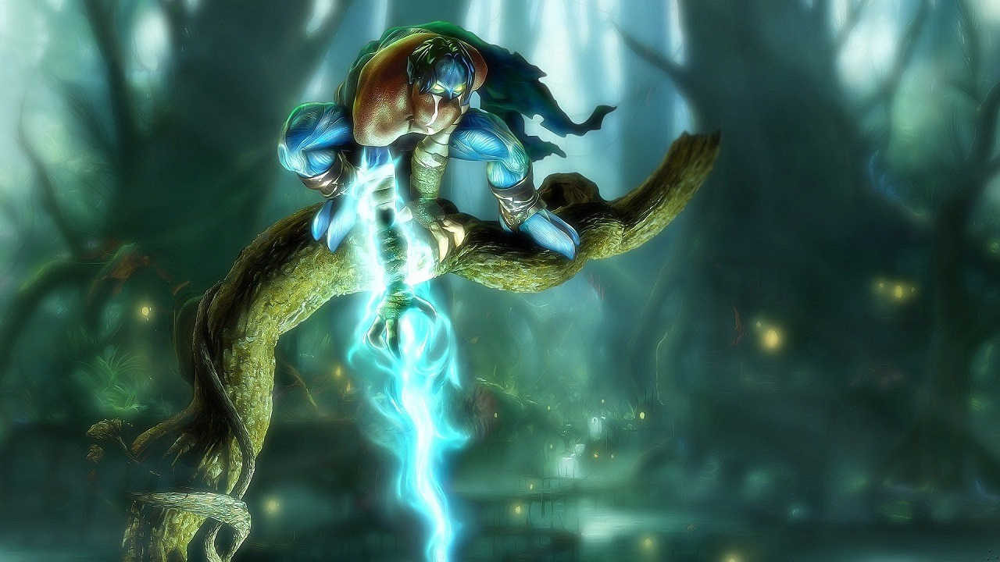

Legacy of Kain: Soul Reaver Remaster está em desenvolvimento
e pode ser anunciado este ano (2021)

Sim meus amigos, esse momento parece que está muito próximo de termos um dos remasters mais
aguardados desde 1999, quando foi lançado para PlayStation.
Nessa linha, o game tão aclamado da época do PlayStation 1, Legacy of Kain: Soul Reaver pode
estar sendo remasterizado, tal rumor se da em virtude do cofundador da XboxEra, @Shpeshal_Nick,
mencionou o boato no último episódio do Podcast XboxEra.
Dessa forma, foi mencionado que uma fonte anônima disse a ele que há um remaster de
Legacy of Kain: Soul Reaver em desenvolvimento e que pode ser anunciado neste ano.
Por fim, confira o vídeo abaixo na marca dos 1:18:00.
Além disso, Nick esclareceu com sua fonte se era um Remaster ou um Remake, e eles confirmaram
que era um “remasterizado”, embora a definição nebulosa do termo pudesse significar qualquer coisa.
Assim, há uma grande possibilidade de ser uma simples suavização dos gráficos até um Demon’s Souls
inteiro ou Revisão do estilo Ratchet & Clank 2016.
Entretanto, houve algum debate no podcast sobre um “remake” mais abrangente sendo mais provável,
embora Nick estivesse apenas citando sua fonte.
“Acredito que esteja sendo anunciado este ano”, disse Nick.
“Talvez no PAX, ou pode ser guardado para o The Game Awards.”
Não está claro a qual PAX ele está se referindo (PAX East ocorre em meados de julho, enquanto PAX
Austrália é em outubro), e The Game Awards 2021 não foi datado, mas provavelmente não acontecerá
até dezembro, deixando uma janela bastante ampla para o remasterização do Legacy of Kain: Soul
Reaver a ser anunciado.
Desse modo, Shpeshal_Nick é a mesma pessoa que divulgou o jogo de expansão autônomo Ghost of
Ikishima para Ghost of Tsushima e diz que veremos tanto isso quanto a filmagem do próximo
God of War no próximo evento do PlayStation, que há rumores de que acontecerá no nas próximas
semanas.
Ademais, ele também divulgou informações sobre Elden Ring no início deste ano, antes de ser
oficialmente revelado no início deste mês, e ele é quem diz que a Remedy está trabalhando em
um jogo exclusivo para PlayStation com a Sony.
Logo, Nick possui um histórico confiável de vazamentos e rumores confirmados, mas, devemos
aguardar mais informações para ver o que irá se concretizar.
Portanto, Legacy of Kain: Soul Reaver foi o segundo (e facilmente mais popular) jogo da série
Legacy of Kain. Sendo desenvolvido pela Crystal Dynamics e escrito pelaescritora Amy Hennig
de Uncharted bem antes de ela escrever os contos épicos de Nathan Drake.